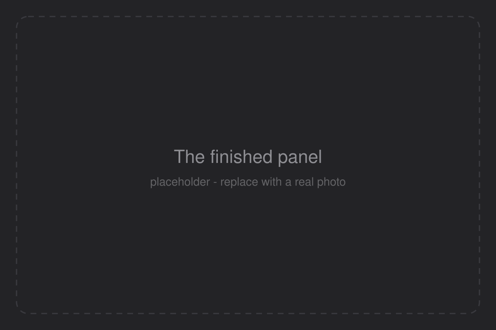
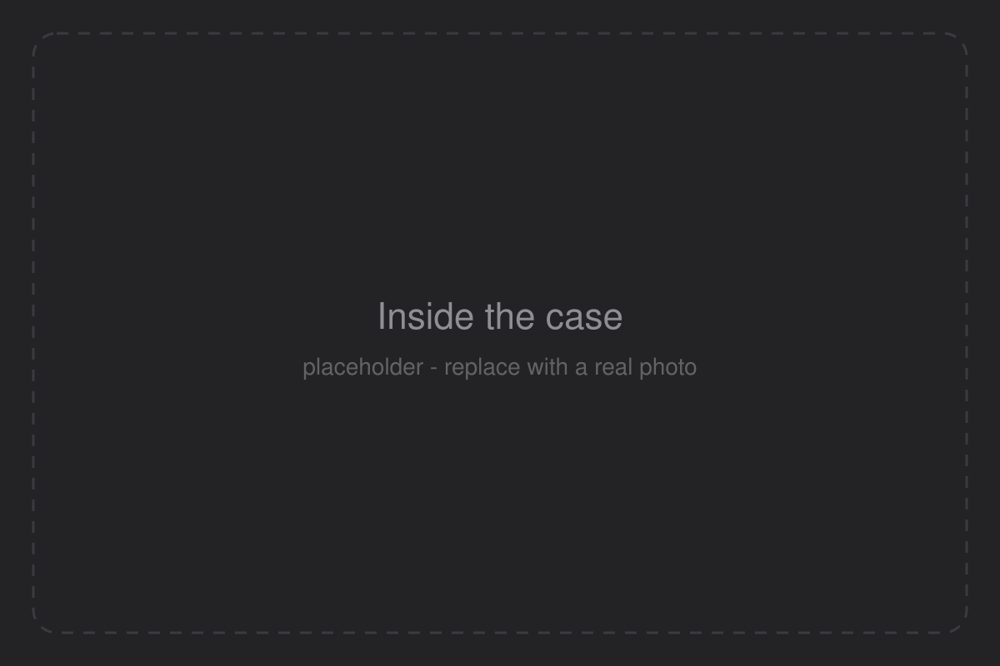
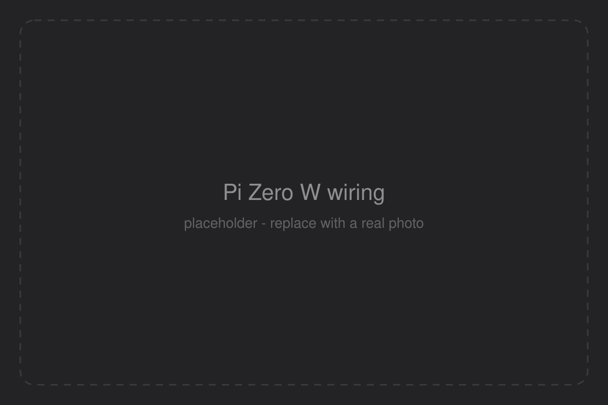
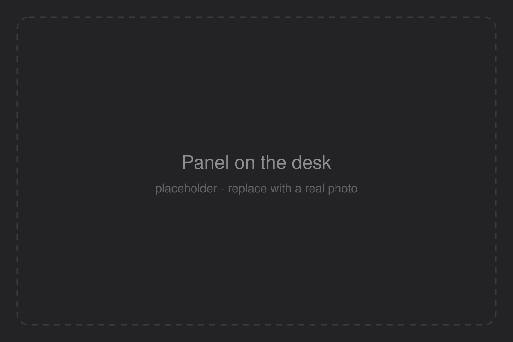

CPU
Total, per core, user and system, load, and a true 4-minute history.
Open source · Rust · Raspberry Pi
A tiny agent measures your Mac. A Pi with a small display draws it, pixel by pixel, straight into the framebuffer. No desktop, no browser, no setup of IP addresses.
Placeholder clip. Replace site/assets/video/demo.mp4 with the real video.
Total, per core, user and system, load, and a true 4-minute history.
Used, pressure, compressed and swap.
SoC and battery, plus the Pi's own temperature and load.
Live up and down throughput with a scrolling chart.
The Mac's data volume: used and free.
The three busiest apps, with helper processes counted together.
The Pi announces itself on the LAN every 3 seconds. The Mac finds it on its own, even after a reboot.
Five times a second the agent sends one small UDP packet. A lost packet is replaced by the next.
The Pi paints the image itself and writes it to /dev/fb0, redrawing only what changed.
Prefer a terminal? There is also a text dashboard for SSH and Mac terminals. See the README.
Placeholder photos. Replace the files in site/assets/images/ (same names) with real pictures.




Edit this list to match your exact build. Put purchase links here too.
Everything you need to print, remix and clone the enclosure.
Open the public document and click Copy workspace to clone and edit it.
Link to addFront bezel that holds the panel.
STL · to addBack shell with the Pi mount.
STL · to addDesk stand.
STL · to addRust workspace: agent, display and wire format. MIT licence.
GitHubWhy UDP and beacons, and how the CPU cost fell from 22% to 0.012%.
DocsPrinting settings: add layer height, material and supports here once you have them.
Both machines on the same LAN.
cargo run --release -p macdash-agent # Mac
cargo run --release -p macdash-tui # anywhere on the LAN./deploy/install-mac.shcargo install cross --git https://github.com/cross-rs/cross
./deploy/build-pi.sh # --zero2 for a Zero 2 W
./deploy/install-pi.sh pi@192.168.0.148 --hdmiThe dashboard starts at boot with no keyboard, and finds the Mac by itself. All flags are in the README.